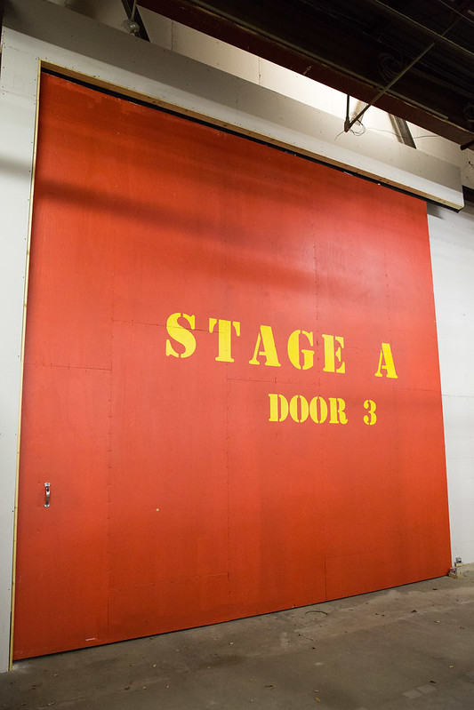

Nimbley films is focused driven towards the making of short films, specially in narratives. Some of this narrative features and driven towards many ganres, but mostly towards the comedy and Sify in visual effects.
 "Goer Drive Film Set" by North Charleston is licensed under CC BY 2.0. To view a copy of this license, visit https://creativecommons.org/licenses/by/2.0/?ref=openverse&atype=richRock in the city is a film based on the band beatles and Queen gathered up together as one to support the people around the world that are fighting against racism